Grade 7 — Proportional relationships
Equations, probability and geometry. This guide contains 59 chapter-level worked lessons, review questions, answers, and linked illustrations.
Contents — select a chapter
Proportions
Use equal ratios to solve missing values.
3/5 = x/20 yields x=12.
- Multiply both sides by 20
- 3×4 =12.
Solve 4/7 = x/21. Find x.
Hint: Multiply numerator by three.
Show answer and verify
12
Check the units, inputs and intermediate steps. Different solution methods may be valid.
Percent change
Percent change is change divided by the original amount times 100.
Price 80 to 100 increases 25%.
- Change 20
- 20/80=0.25
- Multiply by 100.
A price rises 50 to 60. Percent increase?
Hint: Difference ten divided by fifty times 100.
Show answer and verify
20
Check the units, inputs and intermediate steps. Different solution methods may be valid.
Two-step equations
Undo operations in reverse order to isolate the unknown.
3x + 5 = 20 gives x=5.
- Subtract 5
- Divide by 3
- Check result.
Solve 4x - 7 = 29.
Hint: Add seven then divide by four.
Show answer and verify
9
Check the units, inputs and intermediate steps. Different solution methods may be valid.
Distributive property
Multiply every term inside parentheses by the external factor.
3(x+4)=3x+12.
- 3·x + 3·4
- Combine only like terms.
Evaluate 5(x+2) when x=3.
Hint: Add inside, then multiply.
Show answer and verify
25
Check the units, inputs and intermediate steps. Different solution methods may be valid.
Inequality solving
Solve like equations but reverse the inequality sign when multiplying/dividing by negative.
−2x > 8 implies x < −4.
- Divide by −2
- Reverse
- x < −4.
For x + 3 < 8, what is the greatest integer x?
Hint: Subtract 3; strict less-than.
Show answer and verify
4
Check the units, inputs and intermediate steps. Different solution methods may be valid.
Probability
Probability = favorable outcomes divided by equally likely outcomes.
Rolling a 3 on fair die has probability 1/6.
- One favorable face
- Six total faces.
A bag has 3 red and 2 blue. P(red)?
Hint: Divide three by five.
Show answer and verify
0.6
Check the units, inputs and intermediate steps. Different solution methods may be valid.
Scale drawings
A scale factor multiplies every corresponding length.
1:50 scale: 4 cm on plan is 200 cm actual.
- Identify scale 1:50
- Multiply drawing length 4 by factor 50.
At scale 1:100, 6 cm represents how many cm?
Hint: Multiply six by one hundred.
Show answer and verify
600
Check the units, inputs and intermediate steps. Different solution methods may be valid.
Circle measurements
Circumference is 2πr; area is πr².
A circle radius 4 has area 16π.
- Square radius (4²=16)
- Multiply by π.
What is circumference divided by π for radius 5?
Hint: Circumference 2πr.
Show answer and verify
10
Check the units, inputs and intermediate steps. Different solution methods may be valid.
Statistics and spread
Mean is average, median is middle sorted value, range is max minus min.
Values 2,4,9 have mean 5.
- Sum=15
- Divide by 3.
Mean of 4, 6, 8, 10
Hint: Sum then divide by four.
Show answer and verify
7
Check the units, inputs and intermediate steps. Different solution methods may be valid.
Similar triangles
Similar shapes have equal corresponding angles and proportional sides.
One triangle doubles from side 3 to 6; side 5 becomes 10.
- Scale factor 2
- Multiply every corresponding side.
If a side 4 becomes 10, what does side 6 become?
Hint: Scale factor 10/4.
Show answer and verify
15
Check the units, inputs and intermediate steps. Different solution methods may be valid.
Proportional relationships
Proportional relationships: Keep the order of compared quantities and scale both parts by the same factor. Equivalent ratios represent the same proportional relationship.
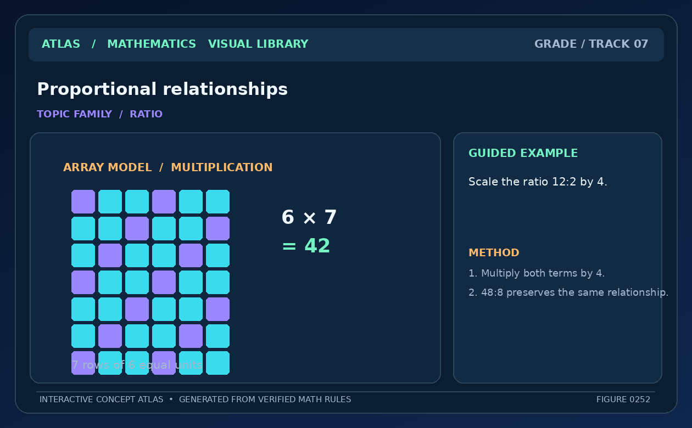
Scale the ratio 12:2 by 4.
- Multiply both terms by 4.
- 48:8 preserves the same relationship.
If 12:2 is scaled by 5, what is the first part?
Hint: Multiply both components by the same number.
Show answer and verify
60
Check the units, inputs and intermediate steps. Different solution methods may be valid.
Graphs of proportional relationships
Graphs of proportional relationships: Keep the order of compared quantities and scale both parts by the same factor. Equivalent ratios represent the same proportional relationship.
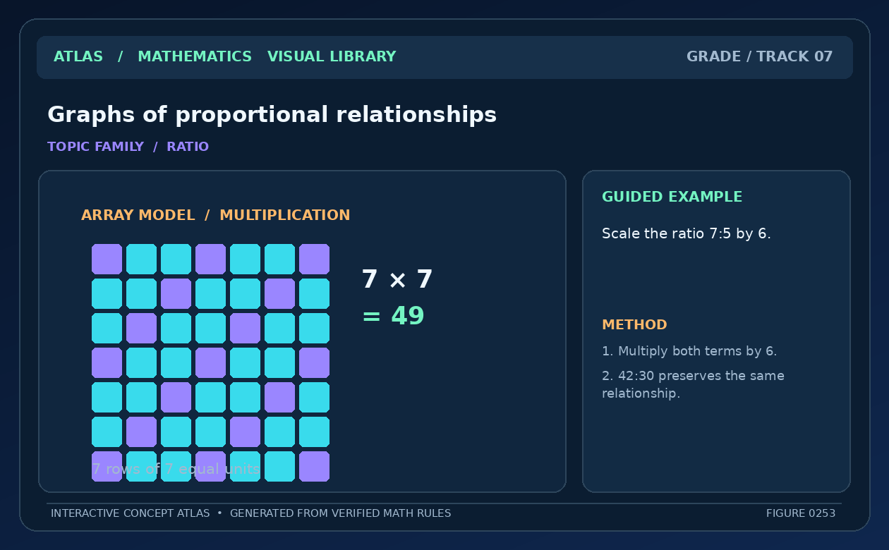
Scale the ratio 7:5 by 6.
- Multiply both terms by 6.
- 42:30 preserves the same relationship.
If 7:5 is scaled by 7, what is the first part?
Hint: Multiply both components by the same number.
Show answer and verify
49
Check the units, inputs and intermediate steps. Different solution methods may be valid.
Constant of proportionality
Constant of proportionality: Keep the order of compared quantities and scale both parts by the same factor. Equivalent ratios represent the same proportional relationship.
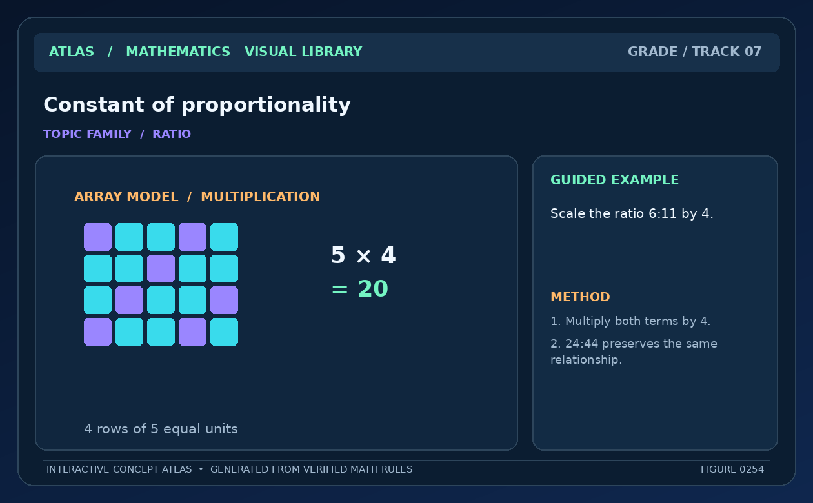
Scale the ratio 6:11 by 4.
- Multiply both terms by 4.
- 24:44 preserves the same relationship.
If 6:11 is scaled by 5, what is the first part?
Hint: Multiply both components by the same number.
Show answer and verify
30
Check the units, inputs and intermediate steps. Different solution methods may be valid.
Unit rate tables
Unit rate tables: Keep the order of compared quantities and scale both parts by the same factor. Equivalent ratios represent the same proportional relationship.
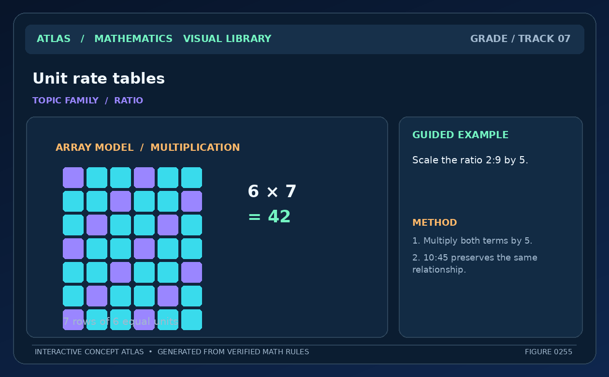
Scale the ratio 2:9 by 5.
- Multiply both terms by 5.
- 10:45 preserves the same relationship.
If 2:9 is scaled by 6, what is the first part?
Hint: Multiply both components by the same number.
Show answer and verify
12
Check the units, inputs and intermediate steps. Different solution methods may be valid.
Scale factors and maps
Scale factors and maps: Keep the order of compared quantities and scale both parts by the same factor. Equivalent ratios represent the same proportional relationship.
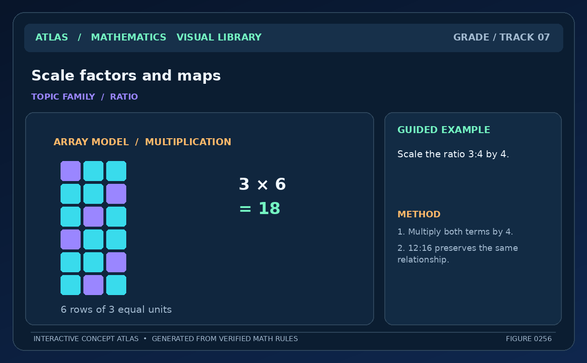
Scale the ratio 3:4 by 4.
- Multiply both terms by 4.
- 12:16 preserves the same relationship.
If 3:4 is scaled by 5, what is the first part?
Hint: Multiply both components by the same number.
Show answer and verify
15
Check the units, inputs and intermediate steps. Different solution methods may be valid.
Proportional equations
Proportional equations: Keep the order of compared quantities and scale both parts by the same factor. Equivalent ratios represent the same proportional relationship.
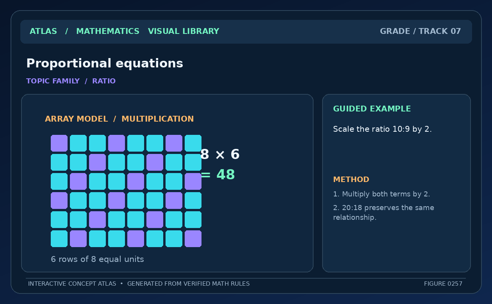
Scale the ratio 10:9 by 2.
- Multiply both terms by 2.
- 20:18 preserves the same relationship.
If 10:9 is scaled by 3, what is the first part?
Hint: Multiply both components by the same number.
Show answer and verify
30
Check the units, inputs and intermediate steps. Different solution methods may be valid.
Similar figures and scale drawings
Similar figures and scale drawings: Keep the order of compared quantities and scale both parts by the same factor. Equivalent ratios represent the same proportional relationship.
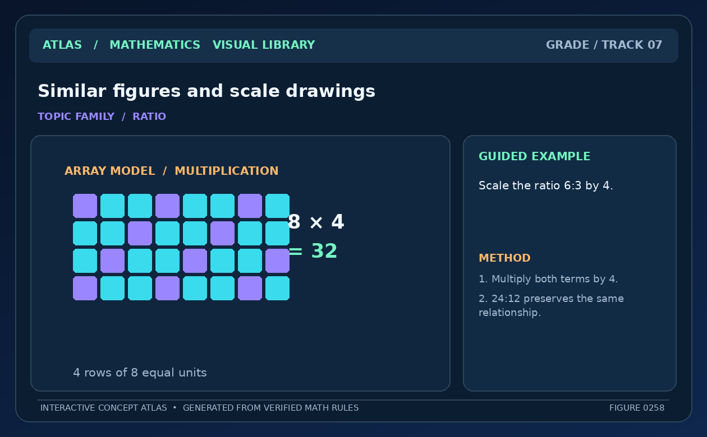
Scale the ratio 6:3 by 4.
- Multiply both terms by 4.
- 24:12 preserves the same relationship.
If 6:3 is scaled by 5, what is the first part?
Hint: Multiply both components by the same number.
Show answer and verify
30
Check the units, inputs and intermediate steps. Different solution methods may be valid.
Percent increase
Percent increase: Rewrite the percent as a decimal by dividing by 100, then multiply the baseline. The original amount is the reference when finding percent change.
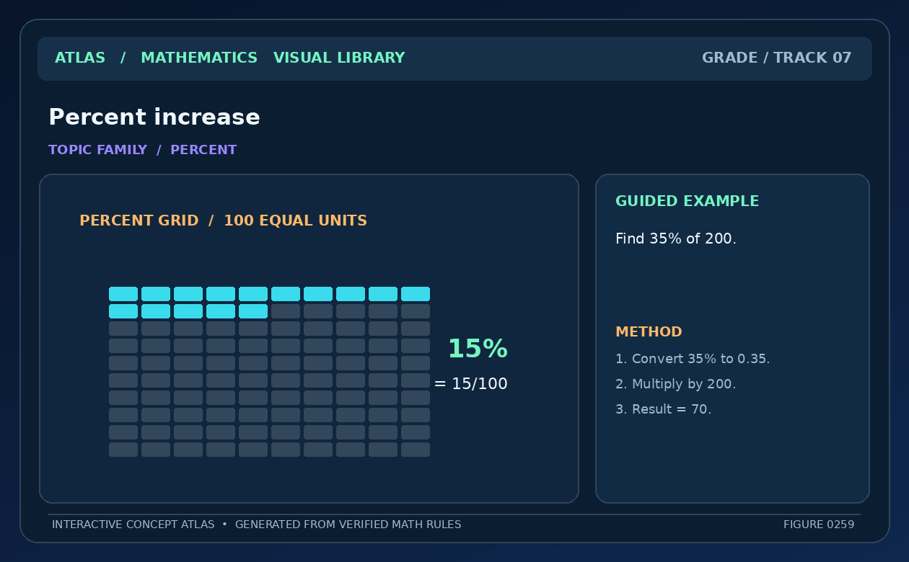
Find 35% of 200.
- Convert 35% to 0.35.
- Multiply by 200.
- Result = 70.
Find 50% of 140.
Hint: Percent means per one hundred.
Show answer and verify
70
Check the units, inputs and intermediate steps. Different solution methods may be valid.
Percent decrease
Percent decrease: Rewrite the percent as a decimal by dividing by 100, then multiply the baseline. The original amount is the reference when finding percent change.
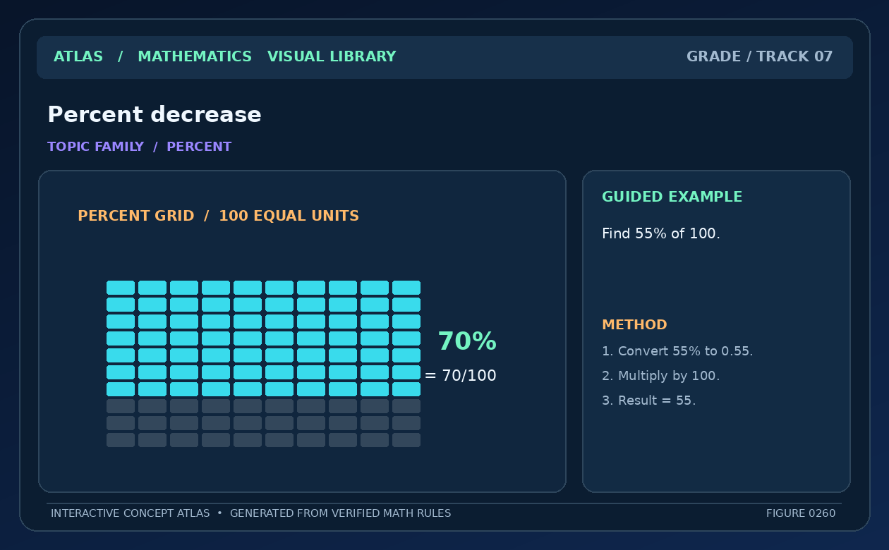
Find 55% of 100.
- Convert 55% to 0.55.
- Multiply by 100.
- Result = 55.
Find 25% of 220.
Hint: Percent means per one hundred.
Show answer and verify
55
Check the units, inputs and intermediate steps. Different solution methods may be valid.
Percent error
Percent error: Rewrite the percent as a decimal by dividing by 100, then multiply the baseline. The original amount is the reference when finding percent change.
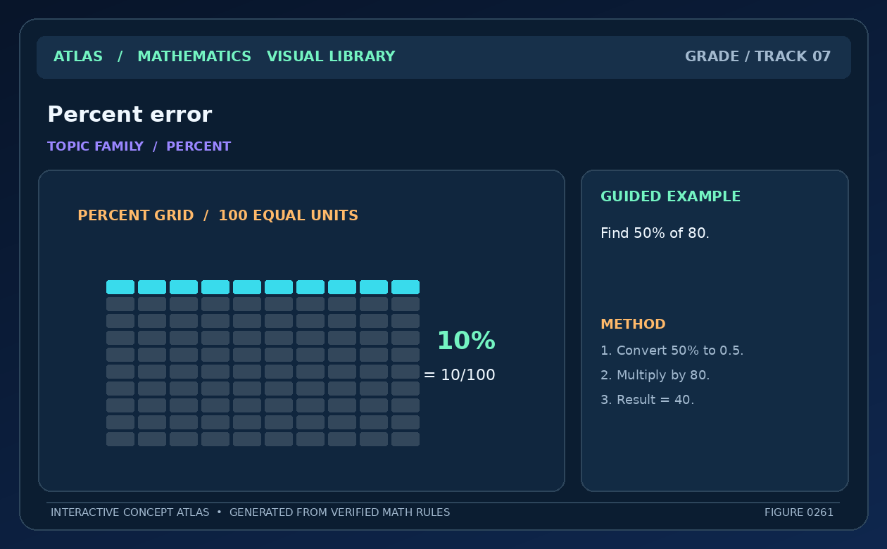
Find 50% of 80.
- Convert 50% to 0.5.
- Multiply by 80.
- Result = 40.
Find 20% of 200.
Hint: Percent means per one hundred.
Show answer and verify
40
Check the units, inputs and intermediate steps. Different solution methods may be valid.
Markdown and markup
Markdown and markup: Rewrite the percent as a decimal by dividing by 100, then multiply the baseline. The original amount is the reference when finding percent change.
Find 25% of 60.
- Convert 25% to 0.25.
- Multiply by 60.
- Result = 15.
Find 15% of 100.
Hint: Percent means per one hundred.
Show answer and verify
15
Check the units, inputs and intermediate steps. Different solution methods may be valid.
Sales tax rates
Sales tax rates: Rewrite the percent as a decimal by dividing by 100, then multiply the baseline. The original amount is the reference when finding percent change.
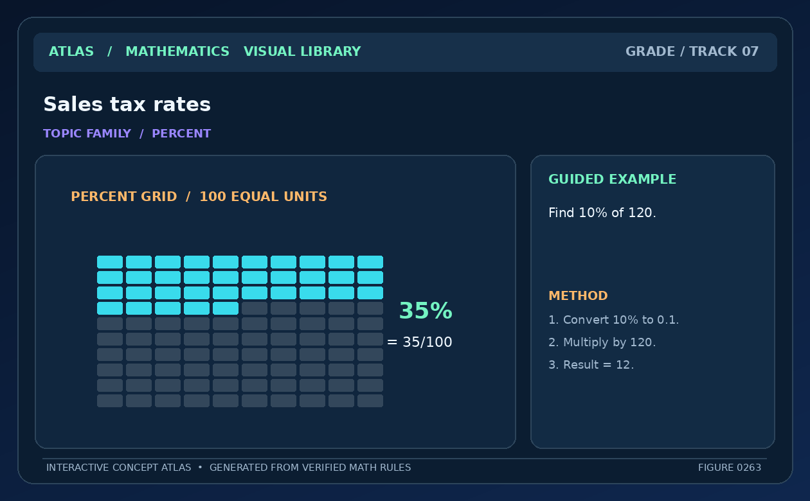
Find 10% of 120.
- Convert 10% to 0.1.
- Multiply by 120.
- Result = 12.
Find 30% of 40.
Hint: Percent means per one hundred.
Show answer and verify
12
Check the units, inputs and intermediate steps. Different solution methods may be valid.
Simple interest
Simple interest: Rewrite the percent as a decimal by dividing by 100, then multiply the baseline. The original amount is the reference when finding percent change.
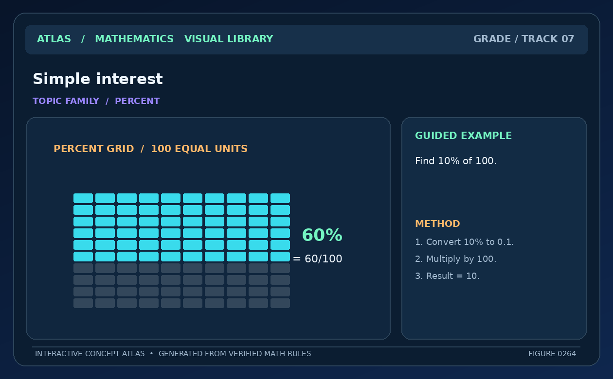
Find 10% of 100.
- Convert 10% to 0.1.
- Multiply by 100.
- Result = 10.
Find 25% of 40.
Hint: Percent means per one hundred.
Show answer and verify
10
Check the units, inputs and intermediate steps. Different solution methods may be valid.
Percent change over time
Percent change over time: Rewrite the percent as a decimal by dividing by 100, then multiply the baseline. The original amount is the reference when finding percent change.
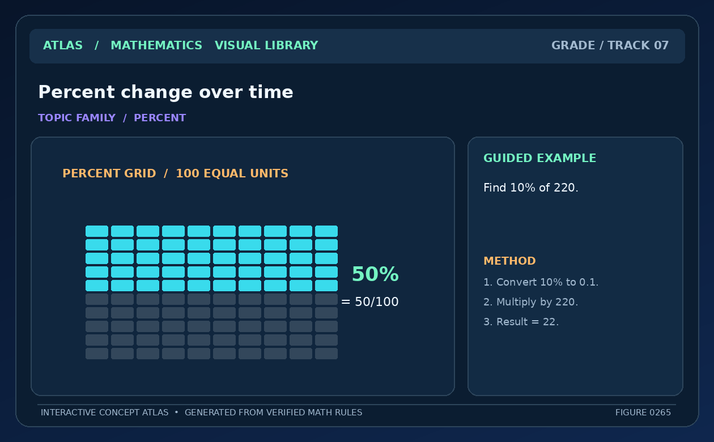
Find 10% of 220.
- Convert 10% to 0.1.
- Multiply by 220.
- Result = 22.
Find 55% of 40.
Hint: Percent means per one hundred.
Show answer and verify
22
Check the units, inputs and intermediate steps. Different solution methods may be valid.
Rational number operations
Rational number operations: Use a signed number line and preserve sign rules when adding or multiplying. A negative product results from one positive and one negative factor.
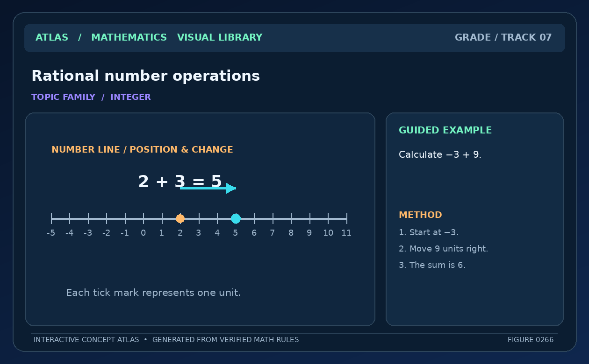
Calculate −3 + 9.
- Start at −3.
- Move 9 units right.
- The sum is 6.
Calculate −8 + 9.
Hint: Start at the negative number and move right.
Show answer and verify
1
Check the units, inputs and intermediate steps. Different solution methods may be valid.
Adding negative fractions
Adding negative fractions: Use a signed number line and preserve sign rules when adding or multiplying. A negative product results from one positive and one negative factor.
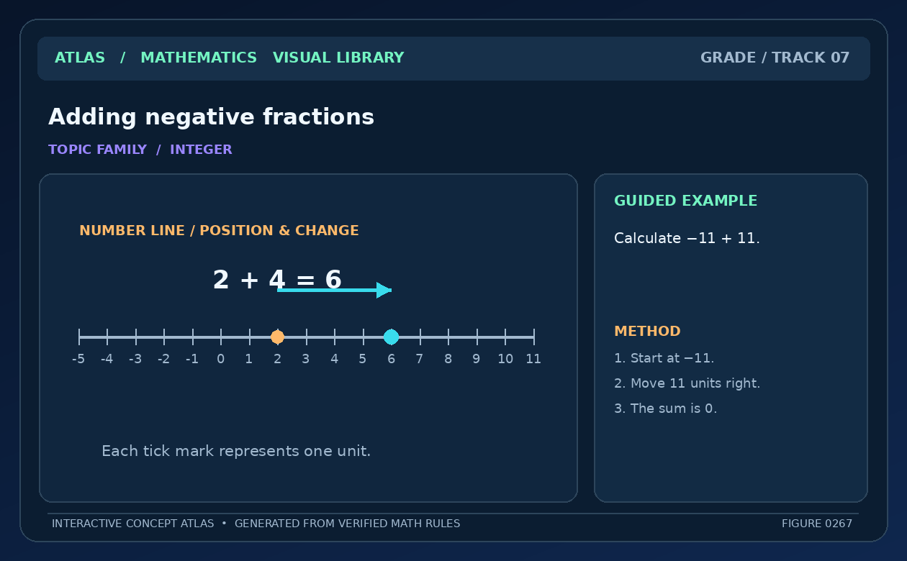
Calculate −11 + 11.
- Start at −11.
- Move 11 units right.
- The sum is 0.
Calculate −17 + 11.
Hint: Start at the negative number and move right.
Show answer and verify
-6
Check the units, inputs and intermediate steps. Different solution methods may be valid.
Multiplying signed fractions
Multiplying signed fractions: Use a signed number line and preserve sign rules when adding or multiplying. A negative product results from one positive and one negative factor.
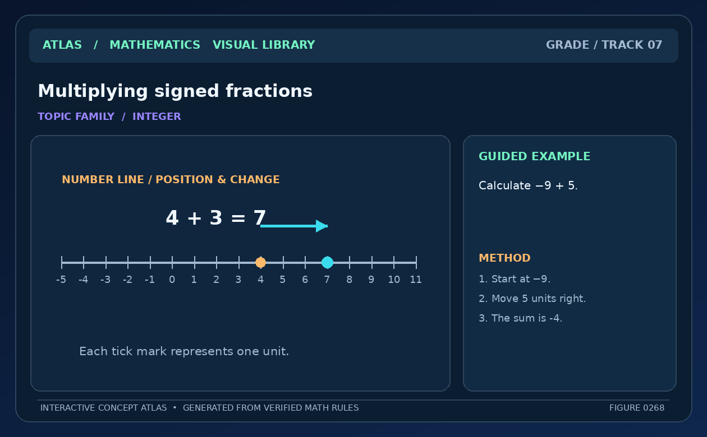
Calculate −9 + 5.
- Start at −9.
- Move 5 units right.
- The sum is -4.
Calculate −10 + 5.
Hint: Start at the negative number and move right.
Show answer and verify
-5
Check the units, inputs and intermediate steps. Different solution methods may be valid.
Dividing signed decimals
Dividing signed decimals: Use a signed number line and preserve sign rules when adding or multiplying. A negative product results from one positive and one negative factor.
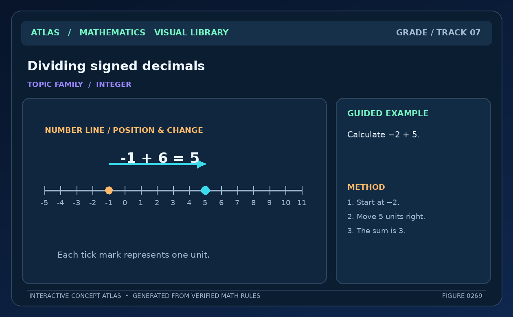
Calculate −2 + 5.
- Start at −2.
- Move 5 units right.
- The sum is 3.
Calculate −4 + 5.
Hint: Start at the negative number and move right.
Show answer and verify
1
Check the units, inputs and intermediate steps. Different solution methods may be valid.
Multistep linear equations
Multistep linear equations: Undo operations in reverse order and perform the same operation on both sides. An equation represents equality, so balanced transformations preserve its solution.
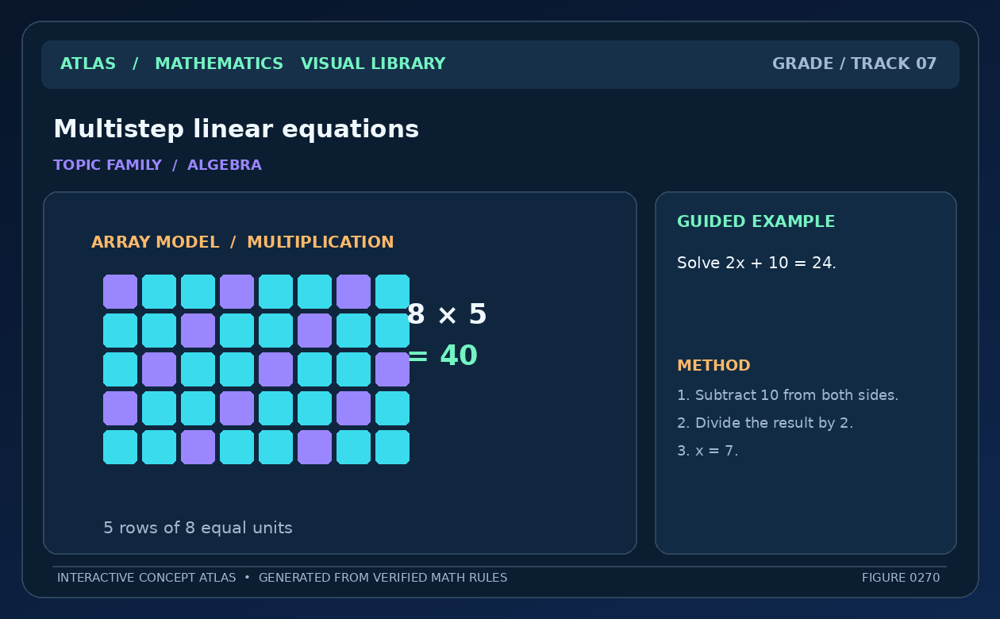
Solve 2x + 10 = 24.
- Subtract 10 from both sides.
- Divide the result by 2.
- x = 7.
Solve 10x + 2 = 92. Enter x.
Hint: Undo addition and then multiplication.
Show answer and verify
9
Check the units, inputs and intermediate steps. Different solution methods may be valid.
Equations with parentheses
Equations with parentheses: Undo operations in reverse order and perform the same operation on both sides. An equation represents equality, so balanced transformations preserve its solution.
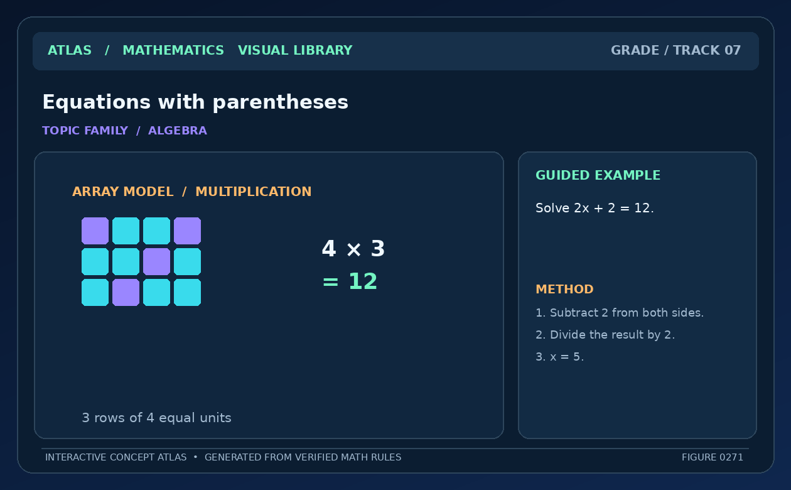
Solve 2x + 2 = 12.
- Subtract 2 from both sides.
- Divide the result by 2.
- x = 5.
Solve 2x + 2 = 16. Enter x.
Hint: Undo addition and then multiplication.
Show answer and verify
7
Check the units, inputs and intermediate steps. Different solution methods may be valid.
Variables on both sides
Variables on both sides: Undo operations in reverse order and perform the same operation on both sides. An equation represents equality, so balanced transformations preserve its solution.
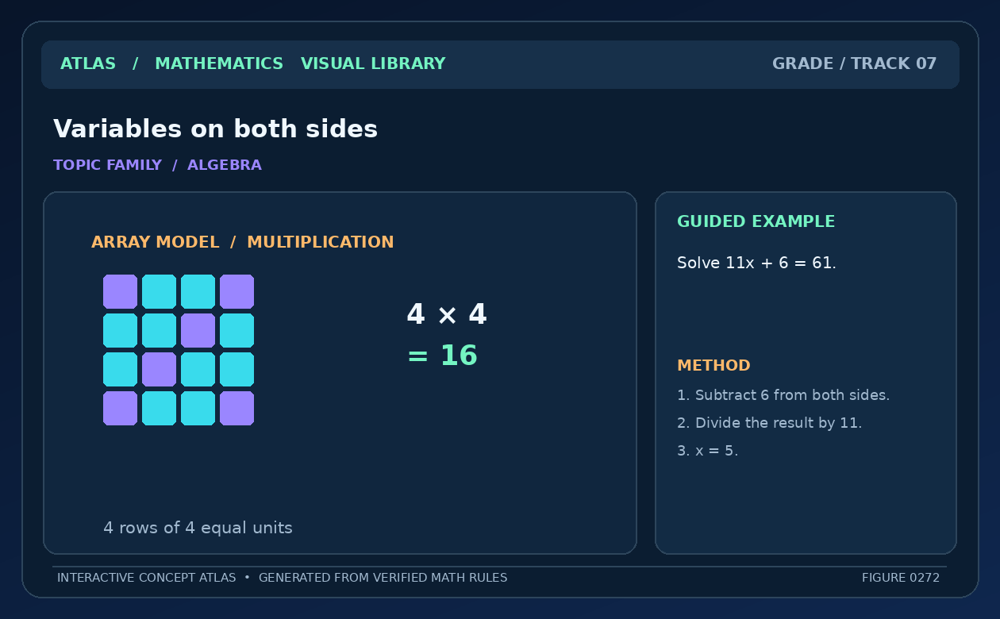
Solve 11x + 6 = 61.
- Subtract 6 from both sides.
- Divide the result by 11.
- x = 5.
Solve 6x + 11 = 53. Enter x.
Hint: Undo addition and then multiplication.
Show answer and verify
7
Check the units, inputs and intermediate steps. Different solution methods may be valid.
Two-step inequalities
Two-step inequalities: Undo operations in reverse order and perform the same operation on both sides. An equation represents equality, so balanced transformations preserve its solution.
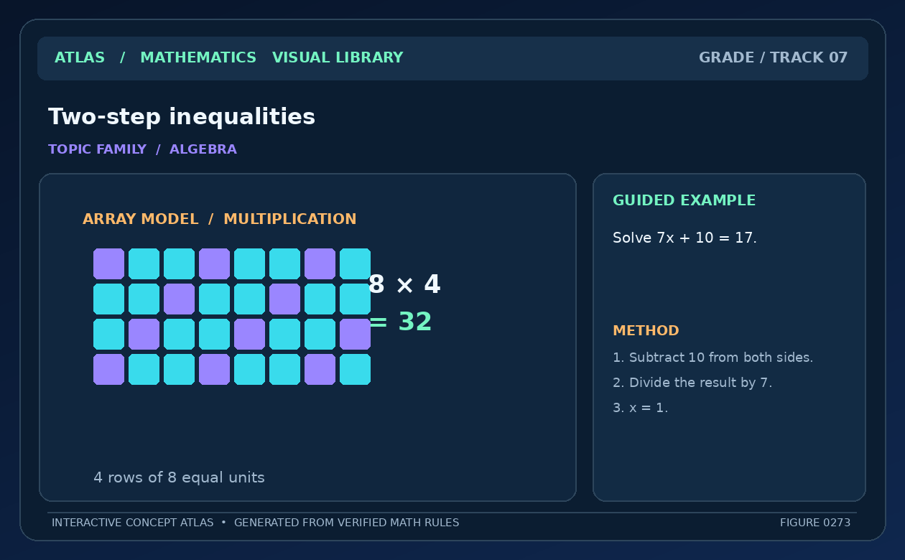
Solve 7x + 10 = 17.
- Subtract 10 from both sides.
- Divide the result by 7.
- x = 1.
Solve 10x + 7 = 37. Enter x.
Hint: Undo addition and then multiplication.
Show answer and verify
3
Check the units, inputs and intermediate steps. Different solution methods may be valid.
Solving compound word problems
Solving compound word problems: Undo operations in reverse order and perform the same operation on both sides. An equation represents equality, so balanced transformations preserve its solution.
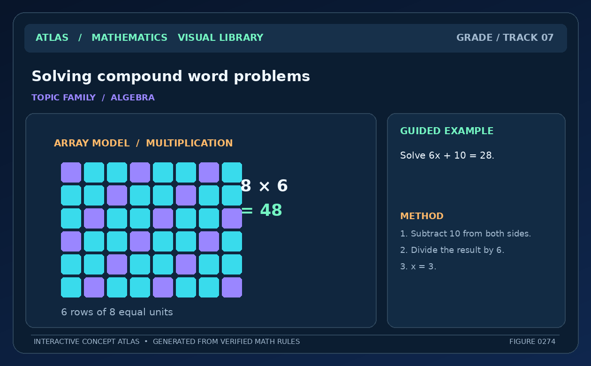
Solve 6x + 10 = 28.
- Subtract 10 from both sides.
- Divide the result by 6.
- x = 3.
Solve 10x + 6 = 56. Enter x.
Hint: Undo addition and then multiplication.
Show answer and verify
5
Check the units, inputs and intermediate steps. Different solution methods may be valid.
Rewriting formulas
Rewriting formulas: Undo operations in reverse order and perform the same operation on both sides. An equation represents equality, so balanced transformations preserve its solution.
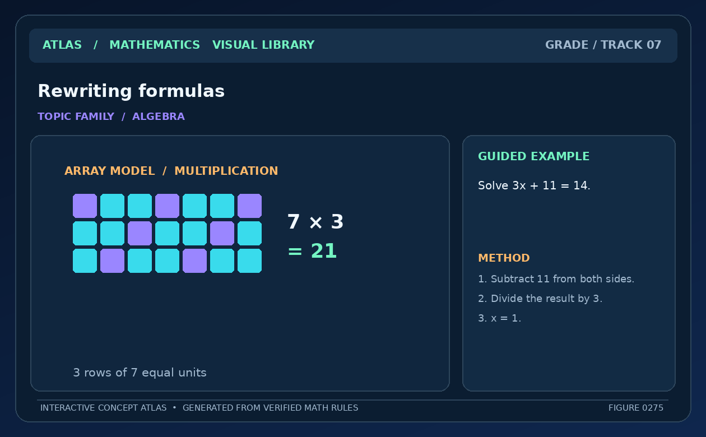
Solve 3x + 11 = 14.
- Subtract 11 from both sides.
- Divide the result by 3.
- x = 1.
Solve 11x + 3 = 36. Enter x.
Hint: Undo addition and then multiplication.
Show answer and verify
3
Check the units, inputs and intermediate steps. Different solution methods may be valid.
Translating statements into algebra
Translating statements into algebra: Undo operations in reverse order and perform the same operation on both sides. An equation represents equality, so balanced transformations preserve its solution.
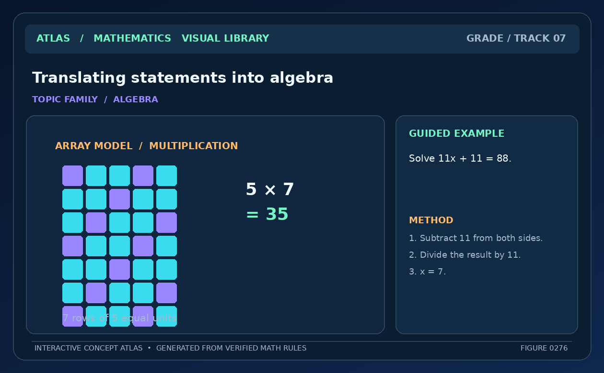
Solve 11x + 11 = 88.
- Subtract 11 from both sides.
- Divide the result by 11.
- x = 7.
Solve 11x + 11 = 110. Enter x.
Hint: Undo addition and then multiplication.
Show answer and verify
9
Check the units, inputs and intermediate steps. Different solution methods may be valid.
Slope as unit rate
Slope as unit rate: In y=mx+b, m describes constant slope and b describes initial value. Slope is change in y divided by the corresponding change in x.
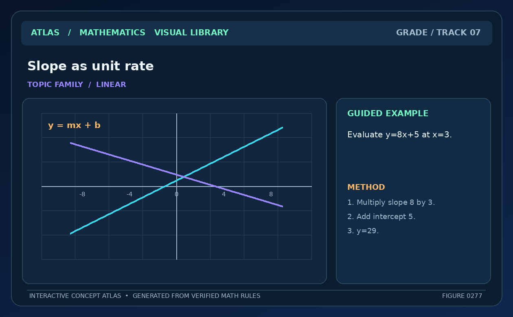
Evaluate y=8x+5 at x=3.
- Multiply slope 8 by 3.
- Add intercept 5.
- y=29.
In y=5x+8, what is y at x=4?
Hint: Substitute x, multiply by slope, then add intercept.
Show answer and verify
28
Check the units, inputs and intermediate steps. Different solution methods may be valid.
Linear equation tables
Linear equation tables: In y=mx+b, m describes constant slope and b describes initial value. Slope is change in y divided by the corresponding change in x.
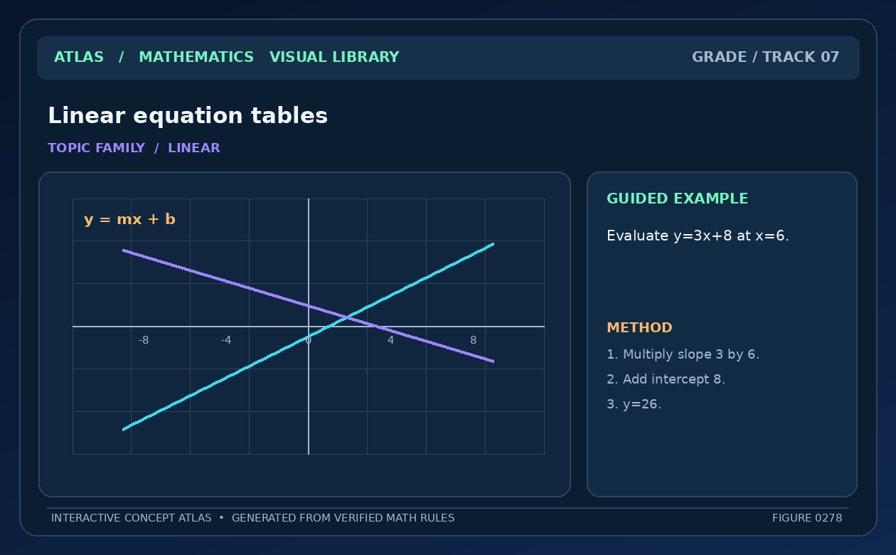
Evaluate y=3x+8 at x=6.
- Multiply slope 3 by 6.
- Add intercept 8.
- y=26.
In y=8x+3, what is y at x=7?
Hint: Substitute x, multiply by slope, then add intercept.
Show answer and verify
59
Check the units, inputs and intermediate steps. Different solution methods may be valid.
Graphing straight lines
Graphing straight lines: In y=mx+b, m describes constant slope and b describes initial value. Slope is change in y divided by the corresponding change in x.
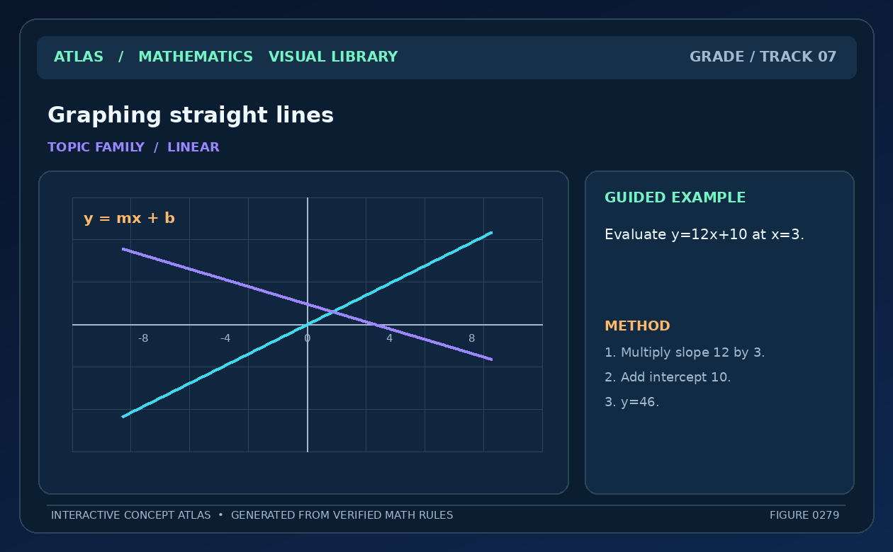
Evaluate y=12x+10 at x=3.
- Multiply slope 12 by 3.
- Add intercept 10.
- y=46.
In y=10x+12, what is y at x=4?
Hint: Substitute x, multiply by slope, then add intercept.
Show answer and verify
52
Check the units, inputs and intermediate steps. Different solution methods may be valid.
Intercepts and slope
Intercepts and slope: In y=mx+b, m describes constant slope and b describes initial value. Slope is change in y divided by the corresponding change in x.
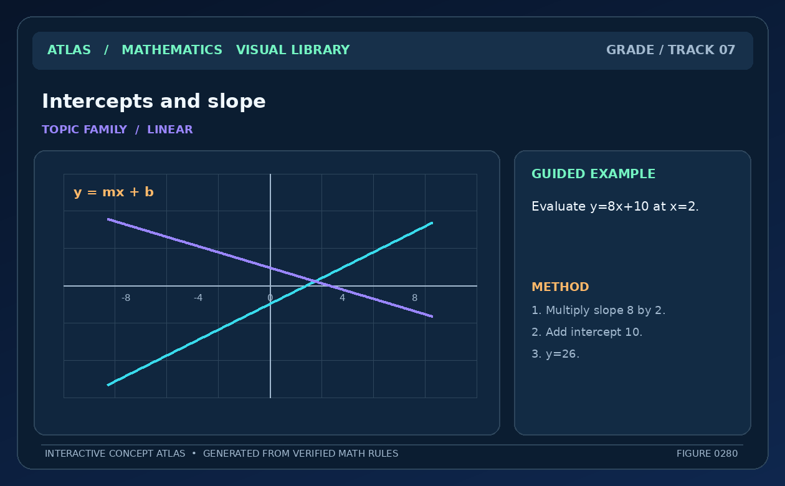
Evaluate y=8x+10 at x=2.
- Multiply slope 8 by 2.
- Add intercept 10.
- y=26.
In y=10x+8, what is y at x=3?
Hint: Substitute x, multiply by slope, then add intercept.
Show answer and verify
38
Check the units, inputs and intermediate steps. Different solution methods may be valid.
Linear modeling of costs
Linear modeling of costs: In y=mx+b, m describes constant slope and b describes initial value. Slope is change in y divided by the corresponding change in x.
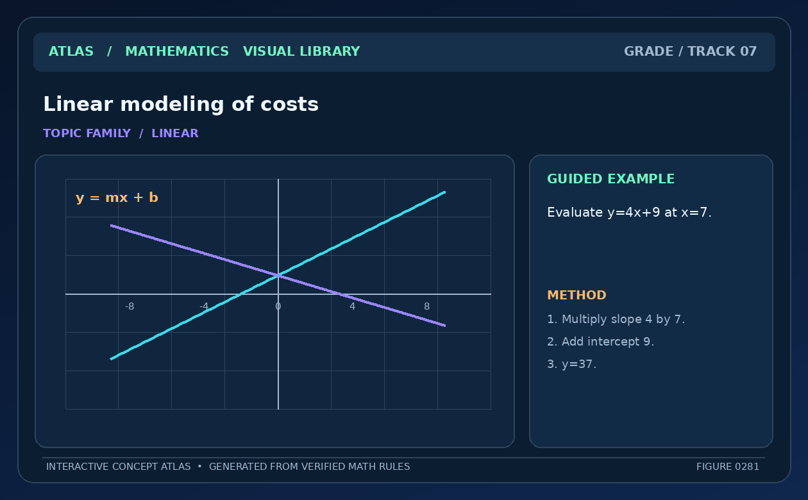
Evaluate y=4x+9 at x=7.
- Multiply slope 4 by 7.
- Add intercept 9.
- y=37.
In y=9x+4, what is y at x=8?
Hint: Substitute x, multiply by slope, then add intercept.
Show answer and verify
76
Check the units, inputs and intermediate steps. Different solution methods may be valid.
Angle relationships with transversals
Angle relationships with transversals: Sketch and label known lengths, angles and shape properties before calculating. A valid geometric argument uses definitions and established properties.
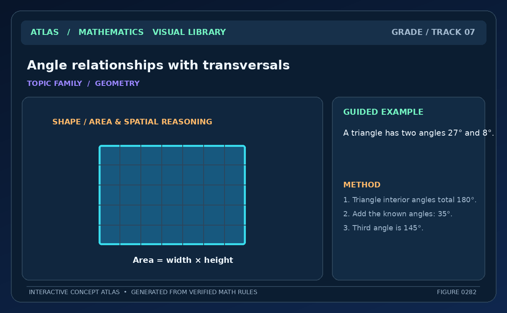
A triangle has two angles 27° and 8°.
- Triangle interior angles total 180°.
- Add the known angles: 35°.
- Third angle is 145°.
A triangle has angles 18° and 6°. Find the third.
Hint: Interior triangle angles sum to 180 degrees.
Show answer and verify
156
Check the units, inputs and intermediate steps. Different solution methods may be valid.
Triangle congruence criteria
Triangle congruence criteria: Sketch and label known lengths, angles and shape properties before calculating. A valid geometric argument uses definitions and established properties.
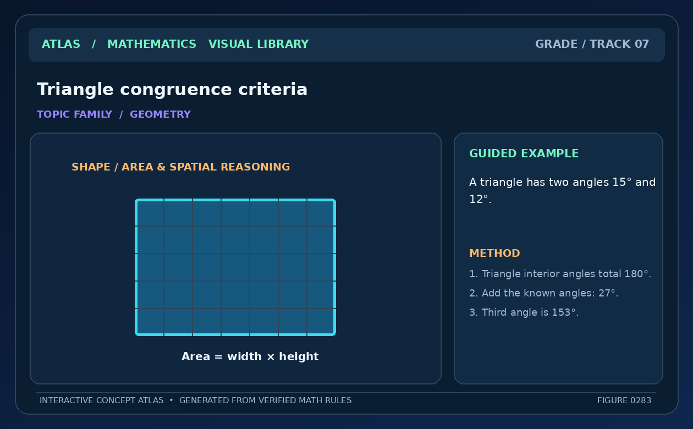
A triangle has two angles 15° and 12°.
- Triangle interior angles total 180°.
- Add the known angles: 27°.
- Third angle is 153°.
A triangle has angles 10° and 9°. Find the third.
Hint: Interior triangle angles sum to 180 degrees.
Show answer and verify
161
Check the units, inputs and intermediate steps. Different solution methods may be valid.
Polygon interior angles
Polygon interior angles: Sketch and label known lengths, angles and shape properties before calculating. A valid geometric argument uses definitions and established properties.
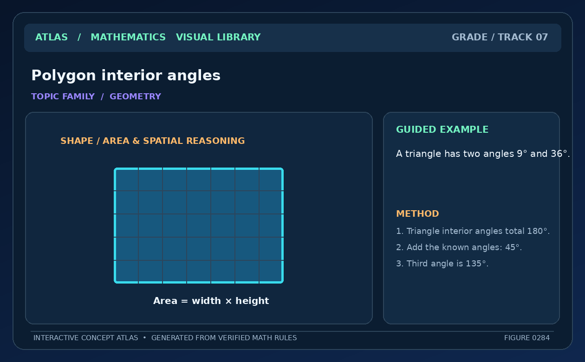
A triangle has two angles 9° and 36°.
- Triangle interior angles total 180°.
- Add the known angles: 45°.
- Third angle is 135°.
A triangle has angles 6° and 27°. Find the third.
Hint: Interior triangle angles sum to 180 degrees.
Show answer and verify
147
Check the units, inputs and intermediate steps. Different solution methods may be valid.
Circumference of circles
Circumference of circles: Sketch and label known lengths, angles and shape properties before calculating. A valid geometric argument uses definitions and established properties.
A triangle has two angles 6° and 24°.
- Triangle interior angles total 180°.
- Add the known angles: 30°.
- Third angle is 150°.
A triangle has angles 4° and 18°. Find the third.
Hint: Interior triangle angles sum to 180 degrees.
Show answer and verify
158
Check the units, inputs and intermediate steps. Different solution methods may be valid.
Circle area formulas
Circle area formulas: Sketch and label known lengths, angles and shape properties before calculating. A valid geometric argument uses definitions and established properties.
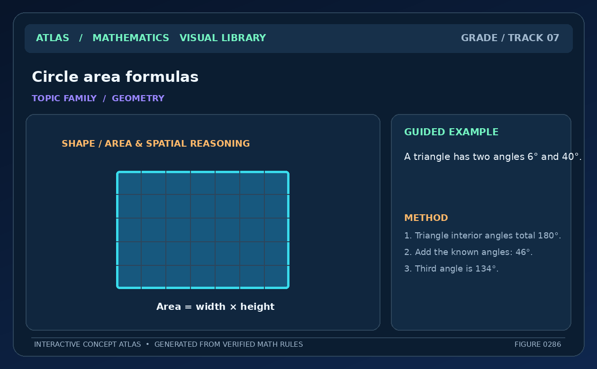
A triangle has two angles 6° and 40°.
- Triangle interior angles total 180°.
- Add the known angles: 46°.
- Third angle is 134°.
A triangle has angles 4° and 30°. Find the third.
Hint: Interior triangle angles sum to 180 degrees.
Show answer and verify
146
Check the units, inputs and intermediate steps. Different solution methods may be valid.
Composite figure area
Composite figure area: Sketch and label known lengths, angles and shape properties before calculating. A valid geometric argument uses definitions and established properties.
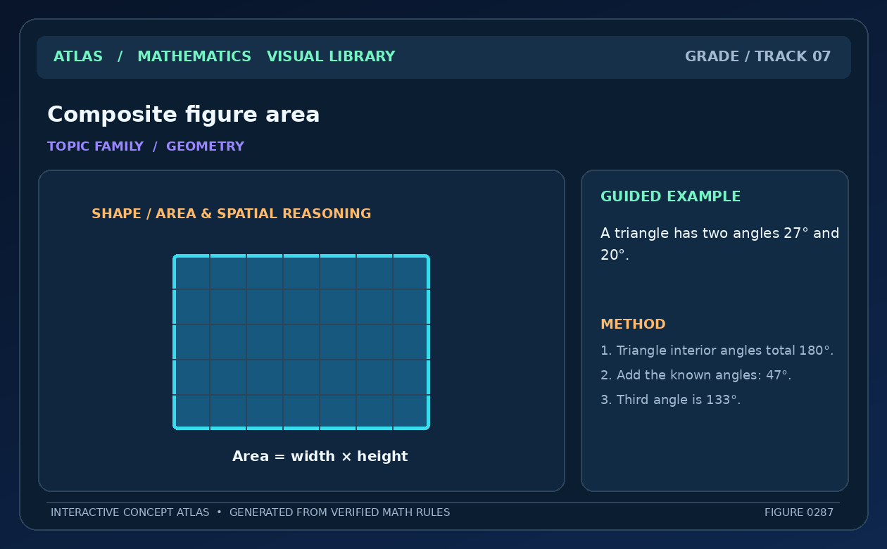
A triangle has two angles 27° and 20°.
- Triangle interior angles total 180°.
- Add the known angles: 47°.
- Third angle is 133°.
A triangle has angles 18° and 15°. Find the third.
Hint: Interior triangle angles sum to 180 degrees.
Show answer and verify
147
Check the units, inputs and intermediate steps. Different solution methods may be valid.
Surface areas of prisms
Surface areas of prisms: Sketch and label known lengths, angles and shape properties before calculating. A valid geometric argument uses definitions and established properties.
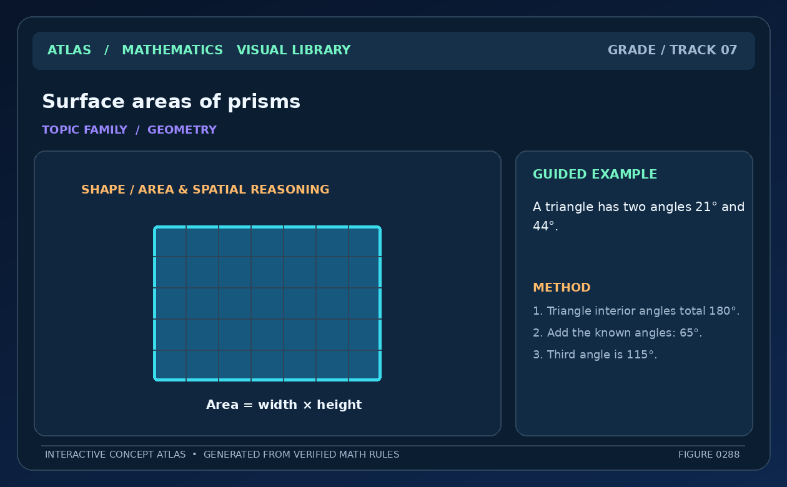
A triangle has two angles 21° and 44°.
- Triangle interior angles total 180°.
- Add the known angles: 65°.
- Third angle is 115°.
A triangle has angles 14° and 33°. Find the third.
Hint: Interior triangle angles sum to 180 degrees.
Show answer and verify
133
Check the units, inputs and intermediate steps. Different solution methods may be valid.
Scale drawings
Scale drawings: Sketch and label known lengths, angles and shape properties before calculating. A valid geometric argument uses definitions and established properties.
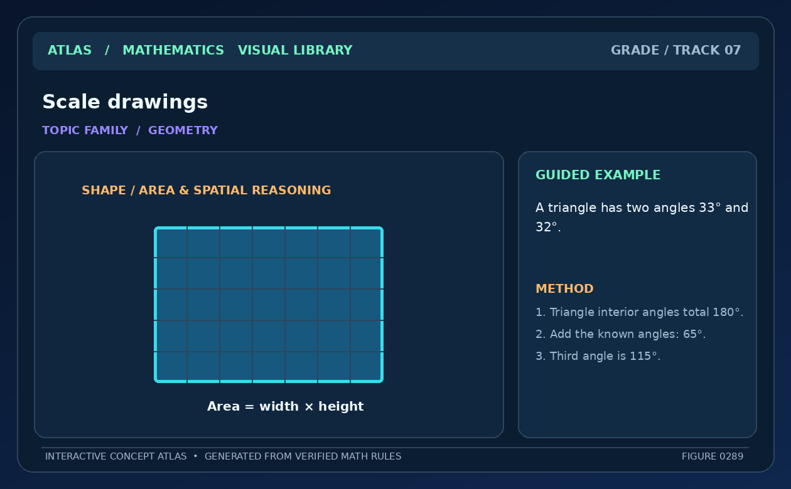
A triangle has two angles 33° and 32°.
- Triangle interior angles total 180°.
- Add the known angles: 65°.
- Third angle is 115°.
A triangle has angles 22° and 24°. Find the third.
Hint: Interior triangle angles sum to 180 degrees.
Show answer and verify
134
Check the units, inputs and intermediate steps. Different solution methods may be valid.
Compound probability
Compound probability: Write favorable outcomes over the total equally likely outcomes. A probability lies between zero and one, inclusive.
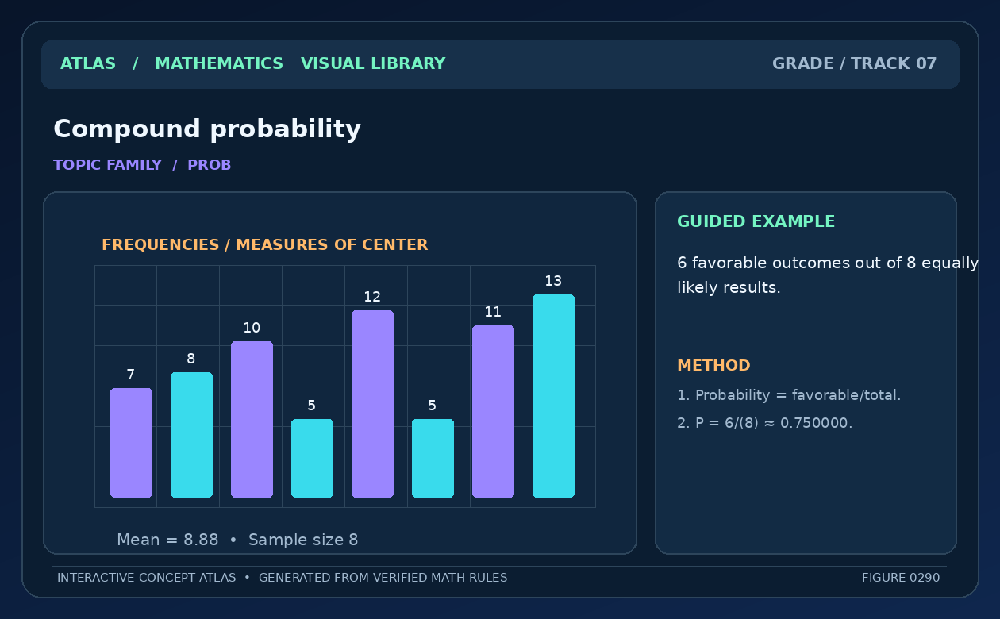
6 favorable outcomes out of 8 equally likely results.
- Probability = favorable/total.
- P = 6/(8) ≈ 0.750000.
2 favorable outcomes out of 8. Give a decimal.
Hint: Favorable divided by total outcomes.
Show answer and verify
0.25
Check the units, inputs and intermediate steps. Different solution methods may be valid.
Independent events
Independent events: Write favorable outcomes over the total equally likely outcomes. A probability lies between zero and one, inclusive.
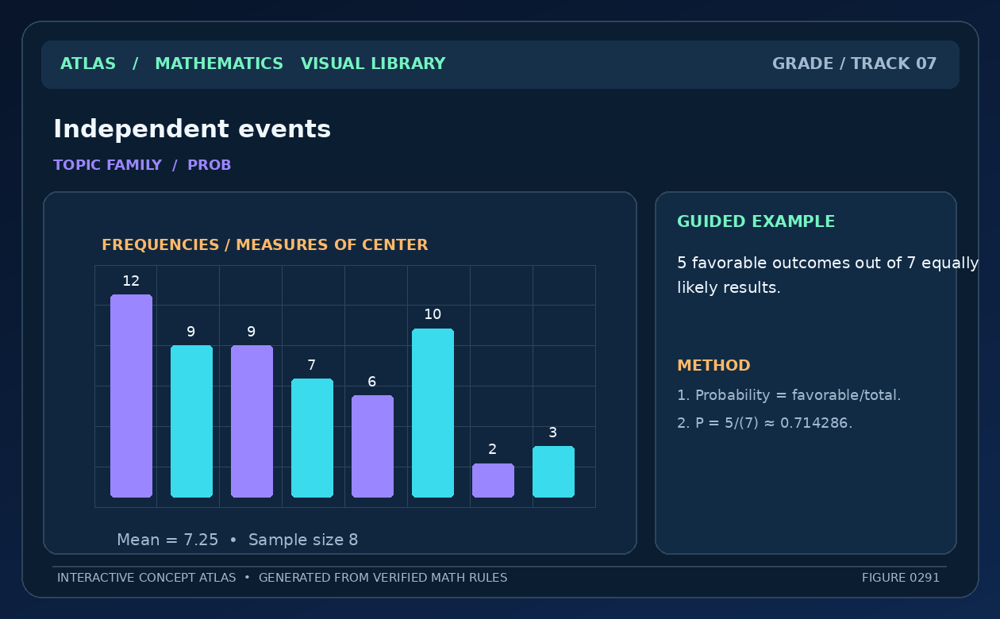
5 favorable outcomes out of 7 equally likely results.
- Probability = favorable/total.
- P = 5/(7) ≈ 0.714286.
2 favorable outcomes out of 7. Give a decimal.
Hint: Favorable divided by total outcomes.
Show answer and verify
0.2857142857142857
Check the units, inputs and intermediate steps. Different solution methods may be valid.
Dependent events
Dependent events: Write favorable outcomes over the total equally likely outcomes. A probability lies between zero and one, inclusive.
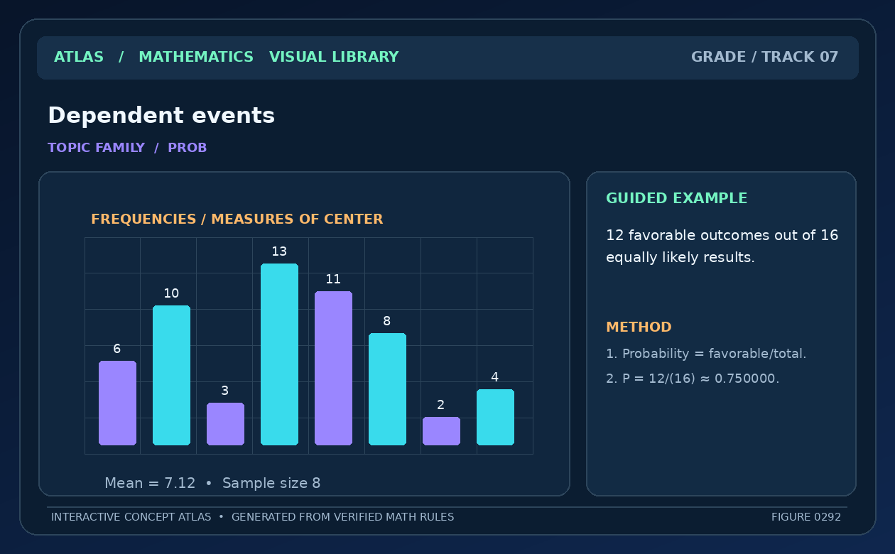
12 favorable outcomes out of 16 equally likely results.
- Probability = favorable/total.
- P = 12/(16) ≈ 0.750000.
4 favorable outcomes out of 16. Give a decimal.
Hint: Favorable divided by total outcomes.
Show answer and verify
0.25
Check the units, inputs and intermediate steps. Different solution methods may be valid.
Tree diagrams for outcomes
Tree diagrams for outcomes: Write favorable outcomes over the total equally likely outcomes. A probability lies between zero and one, inclusive.
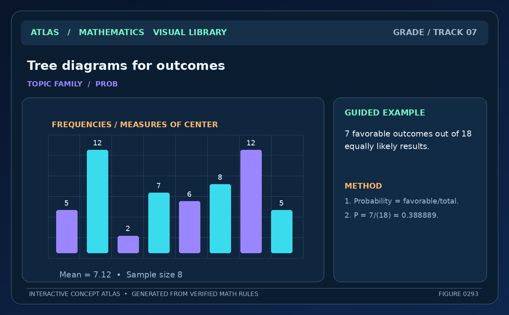
7 favorable outcomes out of 18 equally likely results.
- Probability = favorable/total.
- P = 7/(18) ≈ 0.388889.
11 favorable outcomes out of 18. Give a decimal.
Hint: Favorable divided by total outcomes.
Show answer and verify
0.6111111111111112
Check the units, inputs and intermediate steps. Different solution methods may be valid.
Random sampling
Random sampling: Write favorable outcomes over the total equally likely outcomes. A probability lies between zero and one, inclusive.
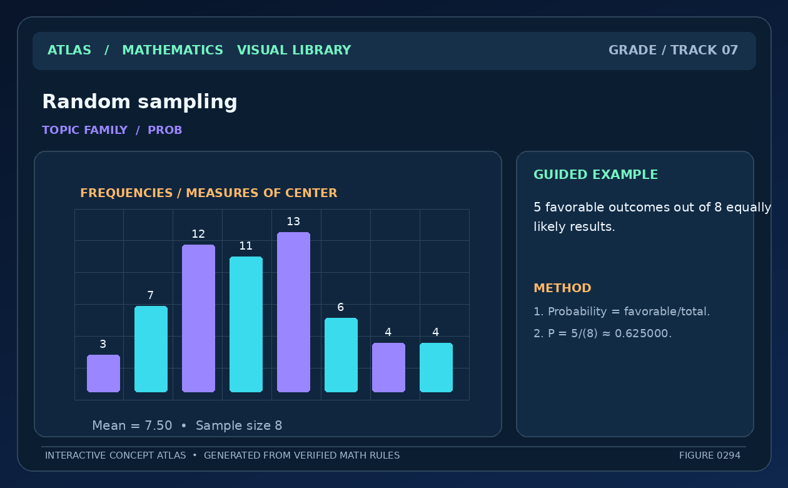
5 favorable outcomes out of 8 equally likely results.
- Probability = favorable/total.
- P = 5/(8) ≈ 0.625000.
3 favorable outcomes out of 8. Give a decimal.
Hint: Favorable divided by total outcomes.
Show answer and verify
0.375
Check the units, inputs and intermediate steps. Different solution methods may be valid.
Simple simulations
Simple simulations: Write favorable outcomes over the total equally likely outcomes. A probability lies between zero and one, inclusive.
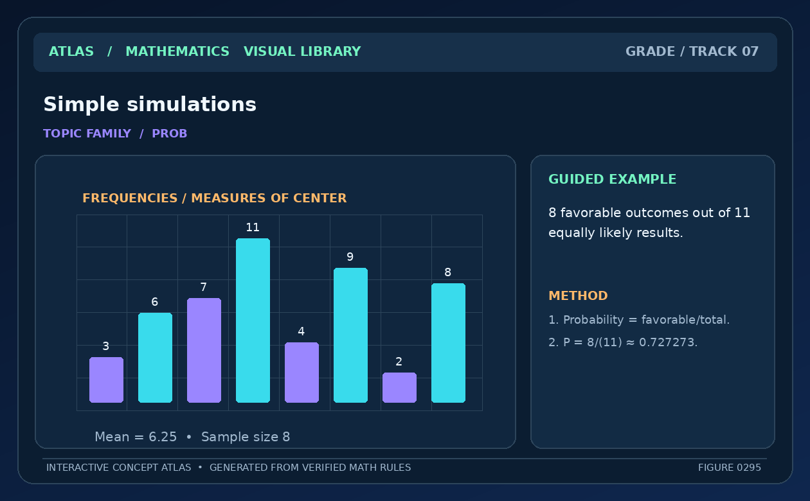
8 favorable outcomes out of 11 equally likely results.
- Probability = favorable/total.
- P = 8/(11) ≈ 0.727273.
3 favorable outcomes out of 11. Give a decimal.
Hint: Favorable divided by total outcomes.
Show answer and verify
0.2727272727272727
Check the units, inputs and intermediate steps. Different solution methods may be valid.
Comparing sample means
Comparing sample means: Organize observations and distinguish measures of center from measures of spread. The mean is the total divided by the number of observations.
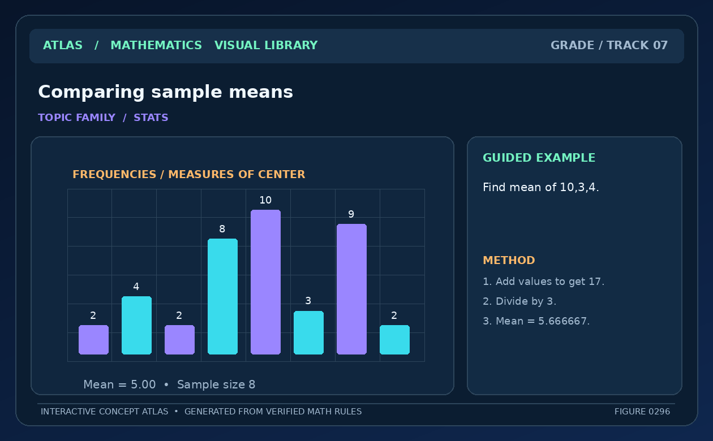
Find mean of 10,3,4.
- Add values to get 17.
- Divide by 3.
- Mean = 5.666667.
Mean of 10,12,14?
Hint: Sum observations and divide by count.
Show answer and verify
12
Check the units, inputs and intermediate steps. Different solution methods may be valid.
Mean absolute deviation
Mean absolute deviation: Organize observations and distinguish measures of center from measures of spread. The mean is the total divided by the number of observations.
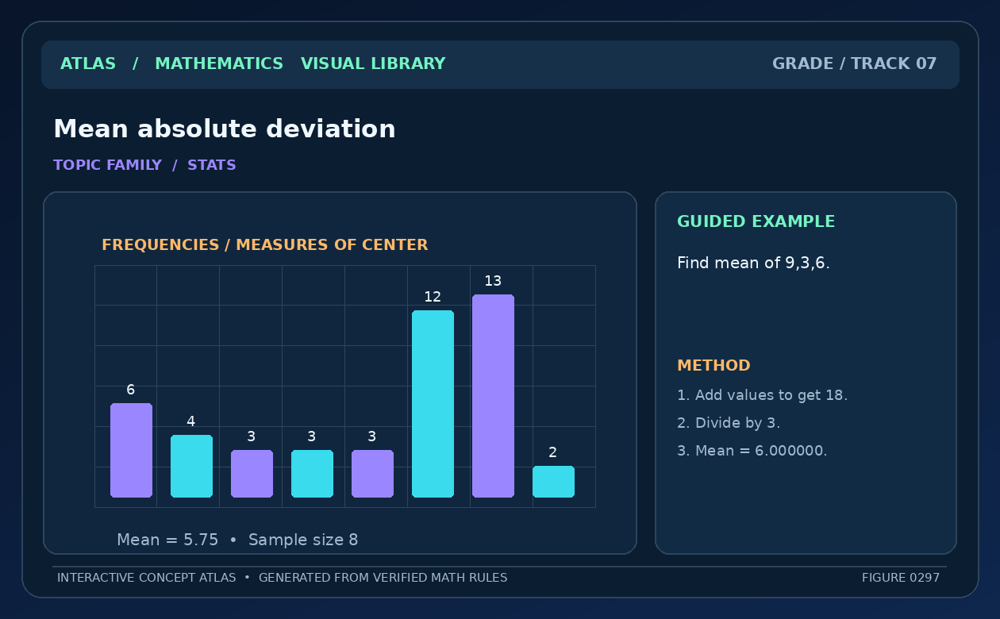
Find mean of 9,3,6.
- Add values to get 18.
- Divide by 3.
- Mean = 6.000000.
Mean of 9,11,13?
Hint: Sum observations and divide by count.
Show answer and verify
11
Check the units, inputs and intermediate steps. Different solution methods may be valid.
Outliers and distribution shape
Outliers and distribution shape: Organize observations and distinguish measures of center from measures of spread. The mean is the total divided by the number of observations.
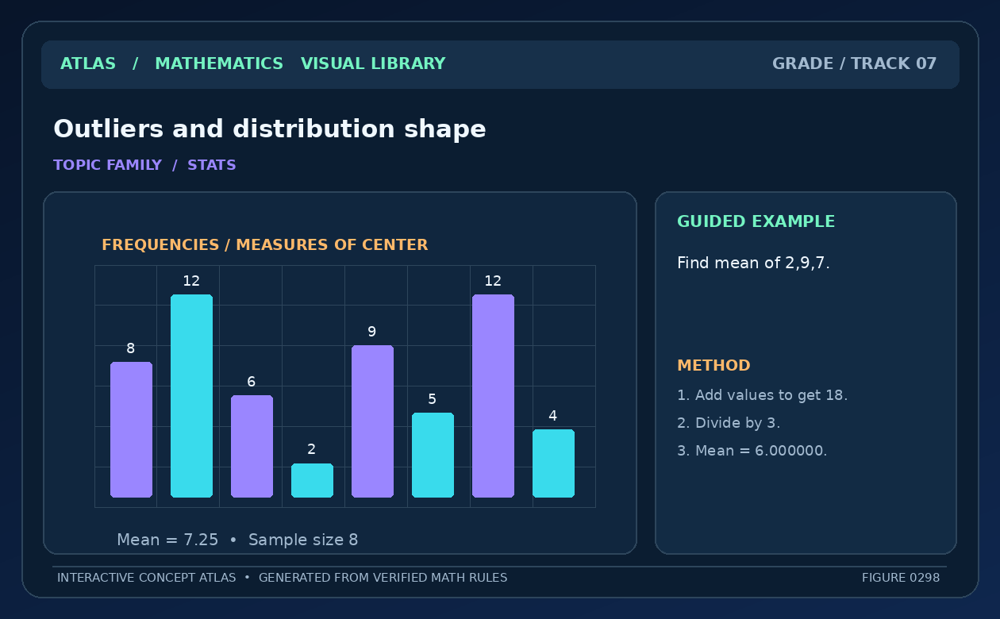
Find mean of 2,9,7.
- Add values to get 18.
- Divide by 3.
- Mean = 6.000000.
Mean of 2,4,6?
Hint: Sum observations and divide by count.
Show answer and verify
4
Check the units, inputs and intermediate steps. Different solution methods may be valid.
APR versus APY introduction
APR versus APY introduction: Convert a percentage to a decimal and write down the compounding period before computing. A loan APR and an investment APY are not automatically interchangeable.
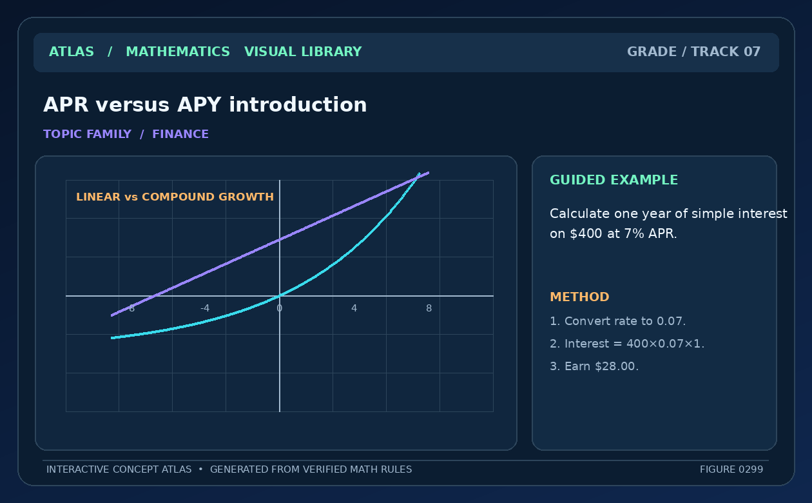
Calculate one year of simple interest on $400 at 7% APR.
- Convert rate to 0.07.
- Interest = 400×0.07×1.
- Earn $28.00.
Interest on $500 at 7% for one year?
Hint: Simple interest is principal × annual rate × time.
Show answer and verify
35
Check the units, inputs and intermediate steps. Different solution methods may be valid.
Discount calculations and unit costs
Discount calculations and unit costs: Convert a percentage to a decimal and write down the compounding period before computing. A loan APR and an investment APY are not automatically interchangeable.
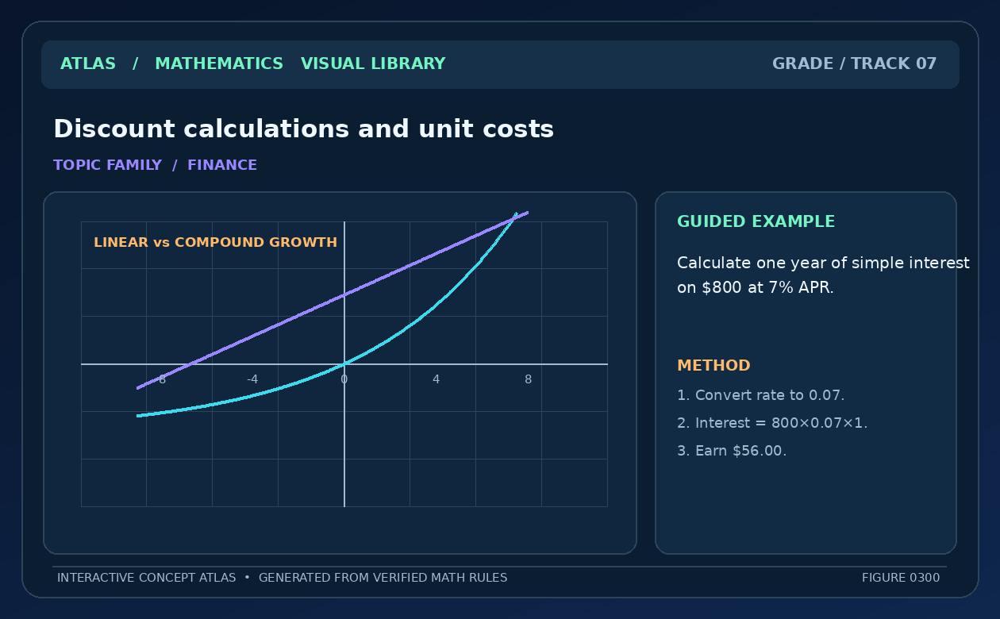
Calculate one year of simple interest on $800 at 7% APR.
- Convert rate to 0.07.
- Interest = 800×0.07×1.
- Earn $56.00.
Interest on $800 at 7% for one year?
Hint: Simple interest is principal × annual rate × time.
Show answer and verify
56
Check the units, inputs and intermediate steps. Different solution methods may be valid.